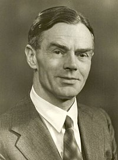
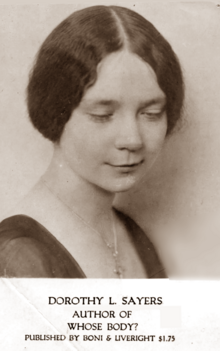
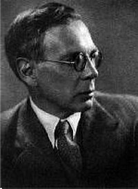
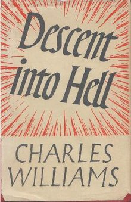
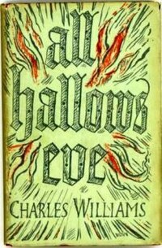
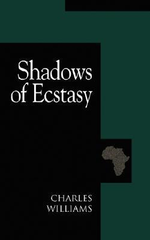
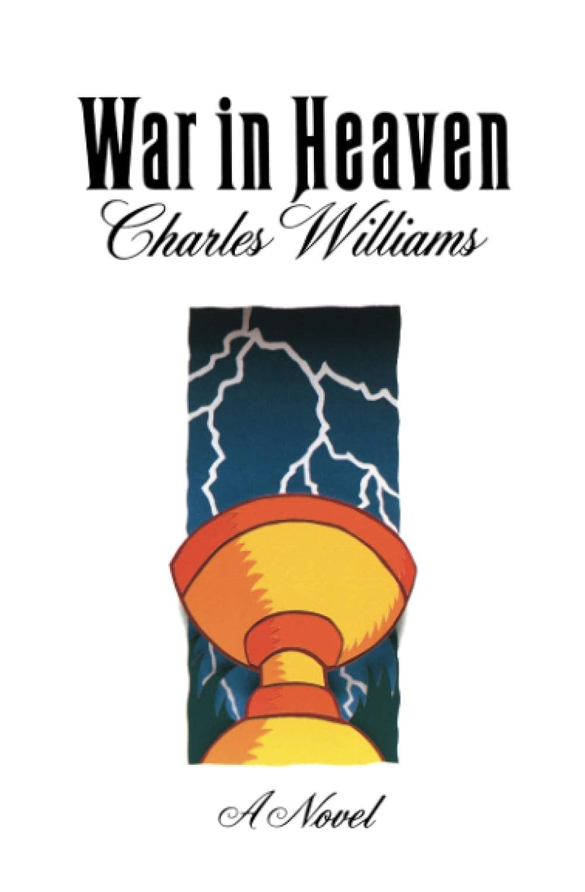
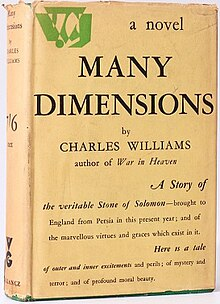
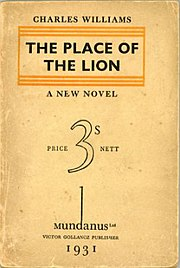
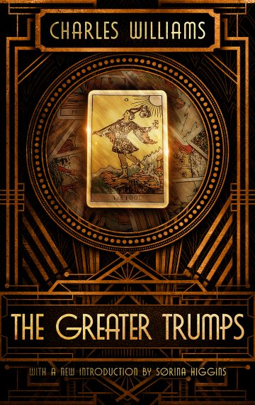

Course: Fantasy & Religion
Lecture #3: Charles Williams
THE INKLINGS / CHARLES WILLIAMS
Watch: The Inklings YouTube 7:10 min
In the beginning of the 1930's a very informal group was formed in Oxford, all the members being aspiring authors. They were united by their interest in the Middle Ages, the antics, fairy tales, myths and, of course, literature of that era.
They used to meet twice a week, one time for a lunch together at the "Eagle and Child" pub, the other times at C.S. Lewis's room at Magdalen College. At times they also met at other pubs such as "The Lamb and the Flag" and "The Burning Babe." these pubs had small private saloon bars, a feature of old taverns. It was a famous and heroic gathering, one that has already passed into literary legend.
C.S Lewis's brother, W.H. Lewis who was a close companion to his brother Clive, described the meetings of the Inklings with gusto and affectionate recollection. It almost sounded like a gathering of unusually literate Hobbits. Here is a description of a meeting in Lewis' Magdalen college rooms.:
"When half a dozen or so had arrived, tea would be produced and then when pipes were well alight Jack (C.S. Lewis) would say, "Well, has nobody got anything to read to us.'
Somehow this brief quotation catches all the jolly goodness, the contrived, desired and sought for simplicity that Lewis hugged to himself and where all the others also could relax themselves.
At this point then, manuscripts would be pulled out of pockets or wallets, and after the reading would come the judgement that was usually sound and frank, and often brutal.
W. H. Lewis recalls 1946 as a vintage year because at most the meetings Tolkien would read a chapter from what they called his "New Hobbit", i.e. the work later published as The Lord of the Rings. For years they heard bits of this book and at times groaned aloud when Tolkien would pull it out to read.
Interestingly, Tolkien had a hard time taking criticism and as Lewis said: "no one ever influenced Tolkien--you might as well try to influence a bandersnatch." His second son Christopher would often read sections for his father. "He has only two reactions to criticism; either he begins the whole thing over again from the beginning or else takes no notice at all."
The amount of work these men was remarkable. C.S. Lewis published a great deal, Tolkien, not enough but they relished each other’s company, without which they would have been at a loss. They would write letters, usually in longhand, to seekers and friends, conduct their academic business and teach.
The bond between their students and themselves was more than most. As one pupil comments: Nothing was ever too much trouble for Tolkien to take over him when he was at Oxford, that forever after there was a bond between the teacher and the taught that went far beyond the normal obligation. This was true of all of these teachers.
These men came from different backgrounds. For example, C.S Lewis was a product of the public schools while Tolkien was not, yet they were all there with many things in common, and genuinely enjoyed each others company.
There were other members of the Inklings, of course. Nevil Coghill, a Chaucer scholar who brought CHARLES WILLIAMS into the circle. Williams was manager of the Oxford press when it moved to London right before the war (1939).
It was Tolkien, Lewis and Williams who are the best known of the Inklings. Certainly Tolkien and Williams, among others, were the main people who drew Lewis along his way. Certainly in the three men, Lewis, Tolkien and Williams, similarities of thought and interest have been explored frequently and at length. This is not completely true, but they all share the theme "THERE AND BACK AGAIN", that is intrinsic to The Hobbit and is the winding and the binding of The Lord of the Rings.
This is the achievement of fantasy, or Romance, which is, as the Oxford English Dictionary defines as "A fictitious narrative in prose of which the scene and incidents are very remote from those of ordinary life."
This is what the so-called trio of Williams, Lewis and Tolkien set out to achieve, all independently, however, and with different results. Tolkien, was for all intents and purposes, the most successful of the three, though the other two are now being recognized for what they have produced.
All three of these writers accept the traditional pattern of romantic fiction, of a Quest, a journey fraught with hazards, even horror, and a safe return; this is classic. Man is never alone in those enterprises whereby his heroic efforts save his and his gods world. Prester John, from the Arthurian stories and Simon Magus (the arch-heretic) appear to help in the novels of Williams:
Lewis's man Ransom, from the Prelandria series, is helped by the gross and sorns as well as Merlin, the bear Bultitude and the Fisher King.
Tolkien’s Orcs, trolls, wizards, Ents, dwarves and Ringwraiths are other than human also, but are realizable to the reader. They dwell in the past of the readers mind and need only the magic of Romance to bring them alive again. Not only are there prodigious happenings in all their fantastic stories, but man is involved in them all, often reluctantly, but always by his own will.
In every case, however, these three manage characters that relate to their own aspirations, questions and needs. They accomplish this each in their own way.
WILLIAMS creates characters that step out of a cocktail party in Westchester on All Hallows Eve and involve themselves, much to their surprise.
LEWIS makes his people out of the world around him, the rather smug little higgledy-piggledy world that he had made for himself and where he welcomed his friends and wrestled with and tried to solve his own besetting, every grave problems and afflictions.
TOLKIEN projected his Hobbits to establish this relation, and he does it successfully. The Hobbits seem to belong to the natural order, though they are beyond the ken and vision of all people, for Tolkien persuades us that they may be around as surely as an exaltation of larks or a slink of foxes.
THE OTHER INKLINGS
Though I have introduced the three men who we will be concerned with in this course there were, as I have alluded to, several other members. There was a total of 19 listed that attended sometime between the mid 1930's and 1963, when C. S. Lewis died, and when it ceased to exist. Some of the more important were as follows

OWEN BARFIELD (1898-1997) a philosopher and attorney He wrote some children's books, a book on C.S. Lewis, on poetry and his philosophy called "Saving the Appearances".
NEVILL COGHILL (1899-1980) a professor of English literature at Oxford; producer of plays, and translator of The Canterbury Tales.
W.H. LEWIS (1895-1973) Brother of C.S. Lewis; professional soldier and amateur historian. wrote: The Splendid Century: Life of Louis XIV and Brothers and Friends (diaries)
GERVASE MATHEW (1905-1976) lecturer in Byzantine studies at Oxford and wrote 2 books in this area
JOHN WAIN (1925-1994) a novelist, poet and dramatist; professor of poetry at Oxford (1973-1978)

DOROTHY L. SAYERS (1893-1957) Not an Inkling but a friend of Lewis and Williams and often read in the Mythopoeic Society. She wrote many novels, poetry, Drama, essays and letters.
She is responsible for the Lord Peter Wimsey mysteries which are popular on PBS as well as a translation of the Divine Comedy, 3 vol. and The Song of Roland

CHARLES WILLIAMS (1886-1945)
Unlike many writers of the 20th century, Charles Williams had an uncanny grasp of the spiritual, and an unusually sharp insight into the mystical realm. He grew up in an age when everything was called into question by rationalism and a scientific approach to learning.
As a backlash to this increasingly rationalistic approach, interest in the occult and in spiritual ideals flourished. Attraction to occult and spiritual things was widespread and commonplace for the public was hungary for something to fill the void, something other than orthodox Christianity.
Groups sprang up to fill the need. The Theosophical Society, The Rosicrucian Order (Rose Cross), and the Hermetic Order of the Golden Dawn were formed. The works of Charles Williams can only be properly understood in the context of his association with these groups.
These orders differed from each other but shared certain characteristics. All were secretive and based around a prescribed ritual. Some who participated in them held an actual belief in magic. Some solemnly practiced sublime rituals in order to obtain enlightenment or spiritual awareness. Such orders drew their philosophies from many sources: the Kabbalah (Jewish mystical tradition), and the Eastern traditions, as well as from gnostic Christian traditions.
Certain orders were what some would term 'occult' with no ties to Christianity; others considered themselves to be Christian but held to Gnosticism, meaning knowledge was the way to salvation, this knowledge being "secret teachings' that were not part of the Christian or Jewish canon.
Some orders of this second variety claimed to have ancient roots, as did the Rosicrucian Order, which was supposedly instituted by Christian Rosenkreuz in the 1600's and which initially had ties with Freemasonry, tho later broke from it.
Williams Grew up in the time that spawned these orders, and spent a period of his life involved with one branch of what he personally termed the "Golden Dawn", but was technically an offshoot of that order called "the Fellowship of the Rosy Cross" founded by A.E Waite (who designed a still used tarot card deck).
The Golden Dawn, originally initiated by S. L. MacGregor Mathers and others, attracted prominent members, including Waite, W. B. Yeats, Evelyn Underhill, and Aleister Crowley. Yet members differed on the focus of the order.
Following a disagreement, Waite founded a sub-sect, the Salvator Mundi Temple of the Fellowship of the Rosy Cross, in 1915, patterning the order on the Rosicrucian manifesto of 1614. Charles Williams joined this order on September 21, 1917.
Accounts of Charles Williams by those who knew him indicate that he was deeply intellectual, but did not possess the financial means to pursue a university education. Yet, he was steeped in intellectual works by his father, who owned and ran an artists supply shop and who was moderately successful as a writer of various plays and short stories.
Speculatively, Williams may have been attracted to the Fellowship of the Rosy Cross because it was one of the few avenues of study available to him and it appealed to his interests at the time. Waite, who was also a Master Mason, wrote on a subject which fascinated Williams--The HOLY GRAIL.
Whether or not the Fellowship of the Rosy Cross was actually gnostic, esoteric, or simply secretive is a matter open to interpretation. However, it's probably reasonable to say that Williams' experience with A.E. Waite focused him in a unique direction.
In Williams novels, the concept of magic is portrayed as a potent force; he was likely aware of the existence of the Hermetic order of the Golden Dawn, the order continued by Yeats and Crowley, the latter who came to refer to himself as "The Beast," and who became known as a Satanist.
Williams attended the Rosicrucian’s and held office in its ranks. Yet he eventually stopped attending. His last recorded attendance was June 29, 1927. No one knows exactly why. Speculation on his reason for leaving ranges from the simple fact that he had to many other commitments to that he quietly rejected the order and its structure, and voted with his feet to discontinue his association with it. He did, however keep in contact with A. E. Waite at least minimally after that date.
An Englishman, Williams was strongly influenced by the Church of England, and belonged to the Anglican communion. He was a member of St. Silas' church, where he attended with his wife and child.
The Anglican influence combined with his long-standing interest in holy artifacts and perhaps his involvement in the Rosicrucian’s brought forth his major works. That Williams was paramountly a Christian is evident in the scope of his writing, which is either directly related to the Church or has strong threads of Christianity interwoven throughout.
Though his writings might be referred to as visionary, Williams saw himself as too cynical and pragmatic to label himself a mystic. He considered himself primarily a poet. He is however, best known for his seven spiritual thriller novels, and for his detailed non-fiction works on the history of the Church.
They are unique works. His fiction reflects many of his spiritual beliefs. In Williams' skillful hands, the Holy Grail (Graal) becomes easily imaginable as a real entity in a small English parish. A pack of ancient tarot cards unleashes vast destruction. Plato's and Dante's ideas become fresh and actual portrayed against a contemporary backdrop. The ordinary becomes extraordinary, and nothing is only as it seems.
Good and evil battle within frameworks of multi-layered meaning, and no facile solutions are offered. Always thought provoking, his works should increase in popularity as current events impel people to explore some of the same questions he posits.
NOTE: Text in Highlight is Optional
Williams believed in and practiced several interesting tenets. He presented concepts like the "Web of Exchange", or the inextricable interconnectedness of all persons in Creation and its attendant responsibility.
He also put forth a belief in the literal bearing of one another's burdens, that one could actually take on another’s anxiety, sickness, or trial, drawn from the Biblical passage "Ye shall bear one another's burdens" This he called the doctrine of substituted Love
One novel, Descent into Hell explores the abstraction of prayer working backward and forward through time. He had several other unusual ideas, which can be found detailed in his non-fiction, but also within his fictional works where they are clearly explained.
Williams the man was very ordinary in many respects. His father had been a man who loved the written word, and he passed his love of reading and writing to his son. After leaving school due to financial constraints, Williams served a brief stint in a Methodist bookshop, then became a proofreader and later an editor at Oxford University Press, where he worked until his death. He had one son.
Williams had a following of young women who attended his lectures, but was said by C. S. Lewis, his friend and contemporary, to have been decorous with them. However, he is said to have had and "affair of the heart' with at least one young woman, Phyllis Jones, a young co-worker whom he renamed "Celia".
Alice Mary Hadfield, Williams friend and biographer, writes as if Williams may have had a sadistic streak. She refers to an incident when Williams passed a ceremonial sword over the backside of a woman, and also traced ritualistic circular designs on the forearm of a woman, but her accounts give no name of the individual or individuals involved, and lack detail and clarity.
We can infer from the written accounts left to us that Williams was not a paragon, but all too human, a man who had significant flaws. However, despite his personal failings, his writing continues to have important things to say to Christianity.
In photographs he seems slight of build with long, slender hands and an inwardly introspective appearance. Yet he was said to have had a lively sense of humor, was quick of speech, and smoked often. Hadfield indicates that Williams had considerable physical problems in 1933, and underwent surgery. Complications from this surgery were, years later, to be the cause of his death.
WILLIAMS JOINS THE INKLINGS:
Around 1938 in an odd coincidence, Williams exchanged a correspondence with C.S. Lewis about a work Lewis had submitted to the press. Lewis had just read one of Williams novels, and had also written. Their letters crossed in the mail. The result was a profound friendship which lasted until Williams's death, a friendship which opened Williams to the Inklings, and whom he influenced to some degree.
Charles Williams works went out of publication partially due to economic conditions caused by WW II. Yet his works are sharp, fresh and original, and pertinent to our age. Many have since come back into print.
Williams continues to stir controversy among Christians and occultists alike, as interpretation of his motives and writings differ among individuals who enjoy his books.
Some say that Williams was an orthodox Christian, based on his published body of works. Others claim he is an occultist based on interpretations of references in his personal correspondences and his association with the Rosicrucians, both of which could be construed to allude to esoteric practices.
Williams, who in his published works referred to Gnosticism, Catharism, and Albigensian as "spreading heresies of Death", would most likely have enjoyed the discourse. He was a man who strove within the boundaries of language to impart unusual perspectives, to breathe life into old, stalwart ideologies, and to encourage critical thinking.
William's references were to jolt the mind into a new way of thinking about faith. His oft quoted parting words to his circle of friends "Under the Mercy" and "Under the Protection" have an unusual quality of affection and formality to them.
William's works are as interesting and insightful now as they were when they were written. They are truly and delightfully unpredictable, and a welcome addition to mystical literature.
Before getting into his book, I need to talk about a concept he uses in all his writings.
The Concept of Co-inherence In the Writings of Charles Williams
The theological writings of Charles Williams, though original and strangely compelling in concept, are, none the less, difficult. The difficulty sometimes arises from stylistic matters, but more often than not it comes from either using old terms in novel ways, or from the creation of new terms altogether.
The term Co-inherence was coined by Williams to denote a universal spiritual principle that worked itself out in the material realm in various ways. If we had to come up with a definition of Co-inherence it would read something like, "Things that exist in essential relationship with another, as innate components of the other.”
In considering how human kind comes closest to the unity of God in the three persons of the Trinity, Williams talks about, "A likeness to the manner by which it exists." He goes on to explain,
“That manner is said to be by 'co-inherence' of the Divine Persons in each other, and it has been held that the unity of mankind consists in the analogical co-inherence of men with each other…”
An example of Co-inherence is in becoming, "Inheritors of God, and fellow inheritors with Christ." (Romans 8:17). We do this by accepting for ourselves (appropriating) the sacrifice of Christ on the cross made on our behalf.
By accepting Christ's death on the cross for ourselves, we participate in that death (being made dead to self) and in his resurrected life (being made alive in Christ). It is an act of Co- inherence between ourselves and Christ.
Other examples of Co-inherence in the natural and spiritual realm include the two natures of Christ (human and divine), the presence of Christ in the Eucharist (however you want to define that), the workings of the state (but especially of the city), all forms of love, and finally a woman's physically bearing a child to the point of birth. All these Williams thought involved the working out of the idea of Co-inherence.
Williams used three other terms in regards to Co-inherence. Sometimes he would use these terms interchangeably with Co-inherence, and other times they would be referred to as sub-categories.
The first of these terms is Exchange, by which he meant the process of living with each other through the sharing of tasks and responsibilities. Examples include people living in a city (especially London), the members of the church seen as the body of Christ (I Corinthians 12:12-30), the idea of the empire in the Arthurian poems of Williams, and Jerusalem as the city of God (Revelation 21).
The second of these terms is Substitution, or Substituted Love, by which he meant the process: of bearing one another's burden.
The last of these terms is Romantic Theology. This idea is that all worldly aspects of love are but a reflection of heavenly love, and as such ultimately point the lover toward God. The greatest literary example of this is the figure of Beatrice in the works of Dante.
A related idea to Williams' concept of Co-inherence is that of the Way of Affirmation. Rather than rejecting the world as corrupt and therefore evil (as in asceticism) one should begin with the notion that the world is good, and that we can transmute the various aspects of this good world into a Christian vision of creation.
THE BOOKS:
It has often been remarked that the novels of Charles Williams are explorations of power. One might even say that these novels, particularly the older ones, were about powers. They reveal Williams special interest in the manipulation of occult forces, in the attempts to transcend the limitations of time and space, to control matter by means of mind, even to grasp at the key to the secrets of life & death.
In his first novel Shadows of Ecstasy (pub., 1933) the concern is with the power w/in man. The next four novels: War in Heaven (1930), Many Dimensions (1931), The Place of the Lion (1931), and The Greater Trumps (1932) -- Power is concentrated in objects or ideas which participate in some greater power and are amenable to the human imagination.


Finally in Descent into Hell (1937) and All Hallows Eve (1945) the locus of power shifts from the human individual and the magical object to human relationships, which in turn participate in the power of being itself.

In Shadows of Ecstasys: Power is "the adaption of the world to an idea of the world" as the central character, Nigel Considine, says "the transmutation of your energies, evoked by poetry or love or any manner of ecstasy, into the power of a greater ecstasy." The possibility that one may drive strength into the imagination of oneself as living so as to conquer death itself.
The problem is that this explicitly opposes two other supposed sources of power, reason and Christianity. However, Nigel is 200 years old and what he has discovered supersedes reason and was only dimly foreshadowed by Christ.
Africa is used to symbolize natural energies, the possibility of ecstasy, and stands over against European civilization, which tends to suppress "shadows" of that ecstasy, poetry and romantic love.
In the next four novels the focus is not only on the energy of the human imagination but also on certain objects, creatures, and rituals which become centers of power.

The War in Heaven is fought, on its earthly front, over the Holy Grail, which is in the sacristy of a small church in England. The enemy is a retired publisher who dabbles in the occult, making use of a magical ointment, a death-dealing diagram, an attempt at transference of souls between a dead man and a living one, and the esoteric rite of the Black Mass.

In Many Dimensions, Williams next title a stone from the crown of Solomon is the object of power. This stone is supposedly First Matter, out of which all spirits and material things are made. Under the will of a single mind the stone makes possible the overleaping of spatial and temporal limitations and the entering of other minds.

In The Place of the Lion an escaped lioness has become, thru the intense concentration of an occultist, an opening whereby the Principles or Ideas or Archetypes of things can begin to draw their material reproduction or Copy back into that transcendental world. The world of particulars is preserved thru the intervention of Anthony Durrant, who, playing Adam, reinvokes thru naming them the material things which are being subsumed into their eternal forms.

The Cards in The Greater Trumps, the one perfect tarot deck, along with the table of moving golden figures which match them, are in correspondence with the universe. The four suits control the elements and the humors. The greater trumps hold the secrets of the principles of thought and existence, "the meaning of all process and the measure of the everlasting dance." Through their efficacy a fierce snowstorm is raised and dissipated; likewise a golden cloud of the beginning of things" is released and then recalled.
In all these books our attention is meant to be drawn chiefly to those persons who become vehicles for the essential goodness of the power centered in the magical objects and acts. As the Archdeacon in War in Heaven says, "Make yourselves paths for the Will of God". This passive role is made easier by the fact that the "saviours" are such ordinary persons. This same archdeacon, for example,. is the "general" for the "War in Heaven".
WAYS TO TAP INTO POWER:
For Williams, there are several ways to tap into power. One is the true life of learning, not psuedo-knowledge, but true philosophy. For some in the novels, poetry and art is the conductor of energy. Another way, shown in The Greater Trumps is the interior journey of the mystic. The preservation of the world comes about because "The search within and the search without have been joined."
The Avenue that becomes increasingly important is that of relationships-of friendship or romantic love. For example, as Anthony learns in The Place of the Lion that right knowledge of the great principles of things is possible by friendship and love; whereas much is possible to a man in solitude, some things--especially that "balance" which includes the virtues of humility and lucidity--are possible only in companionship. He thus becomes a vehicle not merely for power as such but for the power of love.
In The Greater Trumps it is romantic love that is represented as essential to the resolution of the conflict. Nancy, the heroine here, learns that the everlasting dance of which the greater trumps are the measure, is love.
The transmutation of energies, the power of the Grail, the stone with the inscribed Tetragrammaton (the name of YHWH), the recalling of the material world beginning at "The Place of the Lion", the releasing of the creative and destructive powers of the Tarots--these are now seen as mere images by which Williams explores a greater power, the power of being as such.
Charles Williams is a thoroughgoing supernaturalist. He assumes modes of existence other than those perceived by the senses and known by reason and takes for granted that the natural order proceeds from and is dependent upon a reality which is invisible and which operates by laws transcending those discoverable in the visible world.
He is eager to insist, however, that the supernatural is not divorced from the natural; one is not to escape from sensory illusion into spiritual reality. It is rather the true form of the natural, so that one knows the supernatural thru images within the natural.
Williams is also a romanticist. Ie, he holds that there are certain "natural" experiences which can image for us the transcendent Good. The "romantic experience" is related to the idea of magic and to the power of being as such. This can happen, as already discussed, thru various avenues.
There is interchange between matter and spirit, producing the "correspondences' of the occult arts and symbolist poetry. Within each individual person there is interchange between body and spirit: "flesh knows what spirit knows, but spirit knows it knows".
Williams has a lot to say about the necessary coinherence of the sensual and the intellectual. The ideal is not spontaneous feeling nor rigid rationality but the "feeling intellect".
Similarly, in the practical realm, order is to be imposed on the flux of natural moods and passions, so as to produce virtue, courtesy, intelligence and ritual. for Williams there are three distinctive modes of coinherence: i.e., supernatural Charity
- Economic and political exchange. This has to do with goods and services. the Humans duty and privilege is to accept freely their rightful place in a republican and yet hierarchal order of creation.
- Exchange between persons. This can take place in the sexual relation of marriage, in other forms of love, in friendship, and in the priestly function. Theologically, this is the sphere of the incarnation. This does not refer to THE Incarnation but rather to Spirit becoming flesh. He says: "Incarnation is the point of creation.
- The vision of universal coinherence. Here we approach the mystery of the Divine life itself.
To refuse coinherence is to separate oneself from "the nature of things". But the refusal can be made and is being made by persons everywhere.
The emphasis on this fact helps to make Charles Williams last two novels so different from the earlier ones. The same refusal is found there too but only in characters of secondary importance.
With Descent into Hell the process of damnation in a man capable of good is set forth as the central theme.
But there is something else in these last books which constitutes a new element in William's fiction: it concerns the nearness and continuing power of those who are dead. This becomes a means by which Williams can suggest a coinherence not only of the natural with the more-than- natural, but also of death with life and of past (dead) time with the living present.
The setting for Descent Into Hell, Battle Hill, is a place of the dead. A protestant peasant was burned there during the reign of Mary Tudor; a Jesuit was hunted down in Elizabeth's time; and a workman hanged himself in a house a few years before the onset of the novel's action. These people "haunt" Battle Hill and become involved in the lives of those now living there.
All Hallows Eve takes place in the realm of the dead and from the very beginning the story is told largely from the point of view of 2 girls who have just been killed. Much of that story concerns the efforts of a sorcerer to traffic with the dead.
Even with these changes, coinherence remains the theme and images are still drawn largely from the occult. But in these novels, there has been further developments. An emphasis on interchange within the human person and in personal relations rather than on correspondences seen in, and by way of, things.
The individual is taken to be an indissoluble coinherit unity, "The very body of the very soul that are both names of the single man" The dwarf woman fashioned by the magic of the sorcerer in All Hallows Eve falls short of true life, we are told, because it is a false incarnation, a coherence but not a coinherence.
Reference is also made in these novels to various forms of the "romantic experience". But one also encounters here the negative romantic experience, the angst, or anxiety, even the sense of "outrage," as Williams often calls it, which can be aroused by the realization that the goodness of being may stand confronted by an ultimate contradiction.
One of the results of the negative romantic experience is a fundamental confusion concerning appearance and reality. The way to the truth Pauline is told in Descent into Hell, (DIH) regarding her doppelganger, or double (ghostly copy), which she seems to see more and more frequently, is the exercise of mutuality; it is exchange as an act of the will. It is the practical affirmation of coinherence in the face of the experience of contradiction.
In short, Stanhope, the bringer of truth, offers to carry her burden of fear for her. He will take it up by a deliberate act of substituted love, and she will be able to look upon her shadow self w/o the usual terror. This brings her peace for the first time in years and Pauline resolves to build her life around the principle of substituted love. This fear had been tied up with one of the deaths on Battle hill, an ancestor of hers.
She now takes on the fear of her ancestor, burned at the stake, and realizes her doppelganger is her true glorious self. As Williams tells us, "It had been her incapacity for joy, nothing else, that had till now turned the vision of herself aside. Her incapacity for joy admitted fear, and fear had imposed separation."
WENTWORH, the other character in DIH, does not choose wisely. Rather, he falls victim to attacks on Romantic love by choosing his illusions over reality. There are three such false possibilities: One may believe that such an experience is everlasting, not realizing the need for nurturing its fruits by charity and humility.
One may believe that the experience is sufficient, limiting love to the moment of vision alone. Or, and the most common in William’s novels, One may make the experience exclusively personal. Thus, sin is seen as an unwillingness to know the good, as good, and choosing to dwell in illusion, or evil. This is to choose Hell, a fact of this life, not necessarily of the future life--it is self-worship.
ALL HALLOWS EVE takes up again several ideas found in DIH but is also reminiscent of earlier novels. The evil figure, Father Simon, wants to become self-empowered and self-existent rather than dependent, not only knowing good and evil but also having power of life and death.
The traffic between living and dead is even more integral to this novel. Not only does the action of the novel begin with the newly dead Lester and Evelyn but the decisive actions are performed by the dead on behalf of the living. Here, as in DIH, these are acts of substituted love, issuing in salvation.
What is new in this novel is the emphasis on repentance and forgiveness. Coinherence must be affirmed not only in the face of general suffering and loss but also in the face of personal wrongs done or suffered. For Williams, repentance is a "passionate intention to know all things after the mode of heaven". Forgiveness takes place between the living and the dead. - John Edwards "Crossing Over"
Williams says that "the world exists for the Incarnation rather than the incarnation for the world" But because man choose to exercise his freedom to know good as evil, God elected both to put up with man's choice as Creator and endure it as victim. It is precisely on the basis of that act of substituted love that he has set up the new relationships of redemption.
SUMMARY:
The novels of Charles Williams constitute one great proposition, of which the subject is coinherence. Coinherence, actualized by substitution, is the image everywhere of supernatural charity, and the measure of this or the refusal of this is the cause of all his images.
Why Does Williams use fantasy? The answer is that Williams wants precisely the images of power that do transcend human limitations. The element of fantasy points to the supernaturalness. Fantasy also reinforces the idea of the objectivity, the "out-thereness" of Grace, which is also a power. He writes:
“ any process of redemption would have to operate from within the created world if its integrity were to be preserved. Yet because the co-inherence was riddled with evil, and because the creation could not heal its own wound, redemption would have to come from outside that chaos, deprivation, and antagonism."
Fantasy is also part of the "rhetoric" of his fiction. For him the realization of his characters when they recognize certain things, while remaining what they are, but are also more than they seem. It is the power of LOVE that causes this revelation, and the glory which is revealed is itself the coinherence which is "the image everywhere of supernatural charity".
Fantasy provides images for the supernatural dimension of the coinherence and of its refusal. His metaphors for his favorite concept of coinherence include words like "web", "diagram", as well as "pattern". This tendency helps produce in the novels a strong sense of the interrelatedness of things.
The possibility of exchange and substitution as an act overleaping the limitations of time and even the boundary of death is an idea with great power. but this concept has a price: it requires a view of time that tends to make movement and change unreal.
Eternity is always "in the place of the Omnipotence where there is neither before nor after; there is only ACT. Time is simply a form of man's perception. If time is unreal, so is freedom. It is worth recalling how many people in William's novels are simply "paths" for the irruptive power.
He wants to say grace operates both within and without creation but the overemphasis on fantasy at the expense of the everyday, the lack of conflict and suffering, the increasing importance of sequential time--these tendencies make the divine action so preeminent, the power of grace so overriding, that all seems over at the beginning and reading the novel, too, is simply seeing the necessary ceremony played out before us.
This shows the problem with his novels, i.e., the characters are 2 dimensional and simply are predictable. Evil is utterly routed, and the main characters are ready for conversion, all that is needed is a moral teacher.
Taken as a whole the novels of Charles Williams present an impressive--at times magnificent--vision of the universe itself as Love, as a vast coinherence which is the image of supernatural charity. One can only feel admiration for the attempt to give love a basis in existence, rather than treating it merely as a human emotion.